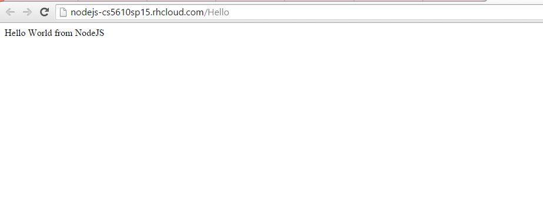

Click here to go to the Node JS Page
Image Screenshot from the Node JS page.
Description : Node.js is an open source, cross-platform runtime environment for server-side and networking applications. Node.js applications are written in JavaScript, and can be run within the Node.js runtime on OS X, Microsoft Windows, Linux, FreeBSD, and IBM i. Node.js provides an event-driven architecture and a non-blocking I/O API that optimizes an application's throughput and scalability. These technologies are commonly used for real-time web applications.
Code Snippet :
var express = require('express')
var app = express()
app.get('/Hello', function (req, res) {
res.send('Hello World! This is Node JS')
})
var ip = process.env.OPENSHIFT_NODEJS_IP || '127.0.0.1';
var port = process.env.OPENSHIFT_NODEJS_PORT || 3000;
app.listen(port, ip);